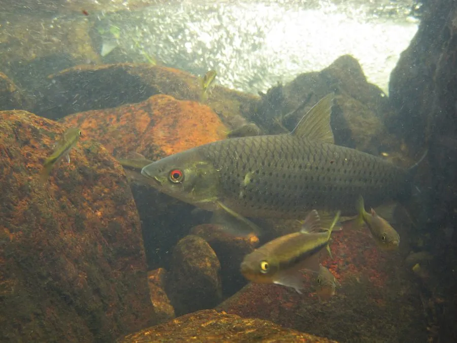

鱼类 · 动物界
赤眼鳟 Squaliobarbus curriculus

中国江河常见的鲤科鱼类，眼上缘有一抹鲜红色，体呈长筒形、游动迅速，是常见的食用鱼和游钓对象。
- 分类
- 门脊索动物门纲辐鳍鱼纲目鲤形目科鲤科属赤眼鳟属
- 栖息环境
- 江河、湖泊和水库的中上层，喜欢水流较缓、水质清澈的环境
- 地理分布
- 中国各大水系以及朝鲜半岛、越南等地
- 保护级别
- 暂无评估；中国未列入国家重点保护野生动物名录
物种志
赤眼鳟体呈长筒形，略侧扁，头小，吻部圆钝，最醒目的特征是眼球上缘有一块鲜红色的斑，因此得名。体色背部灰褐或青灰，体侧银白，鳞片边缘有黑色小点，形成不明显的纵纹。成鱼体长一般 20–40 cm，最大可达 50 cm。
赤眼鳟分布于中国各大水系以及朝鲜半岛、越南等地，栖息在江河、湖泊和水库的中上层，喜欢水流较缓、水质清澈的环境。它是杂食性鱼类，吃藻类、水生植物、昆虫、小鱼和有机碎屑。繁殖期在春夏季，雌鱼在水草间产卵。赤眼鳟生长较快，肉质细嫩，是中国南方常见的食用鱼和游钓对象。由于水利工程和过度捕捞，部分水域资源下降，目前尚无明确的 IUCN 评估。
形态与习性
- 食性杂食性，吃藻类、水生植物、昆虫、小鱼和有机碎屑
- 体长一般 20–40 cm，最大可达 50 cm
- 外形眼球上缘有鲜红色斑，体呈长筒形
- 繁殖春夏季在水草间产卵
- 习性游动迅速，常在水体中上层活动
- 经济价值南方常见食用鱼和游钓对象
趣味知识
- 赤眼鳟眼球上缘的鲜红斑是它最醒目的标志，因此得名。
- 它游动迅速，常在水体中上层追逐食物。
- 赤眼鳟肉质细嫩，是中国南方常见的食用鱼。